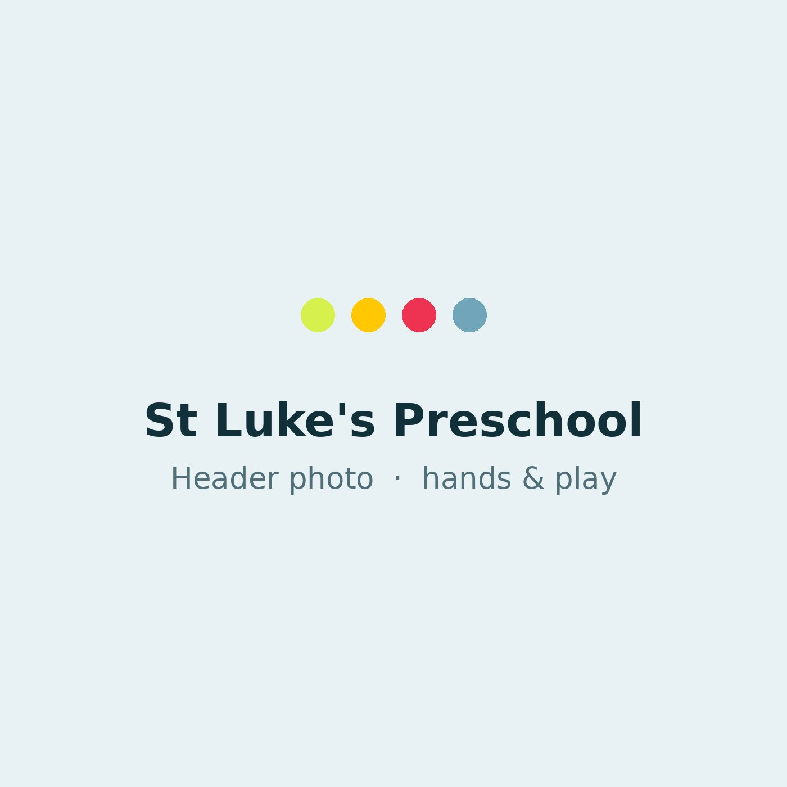
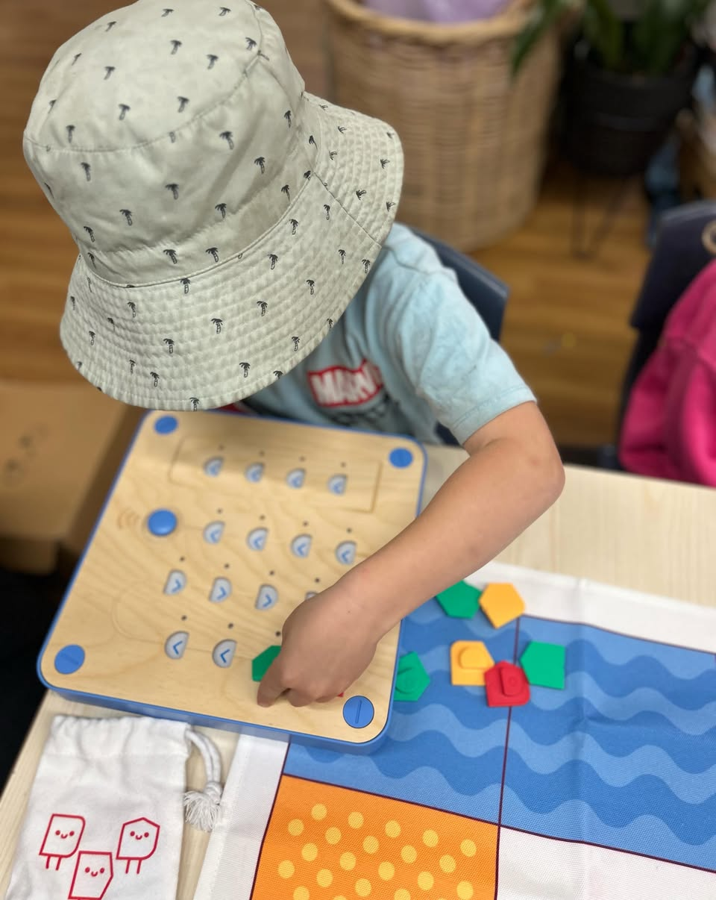
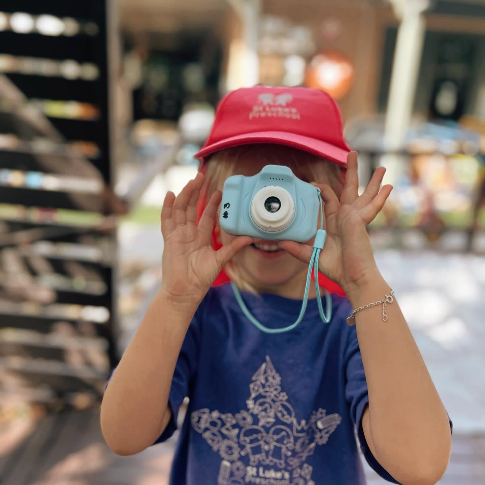
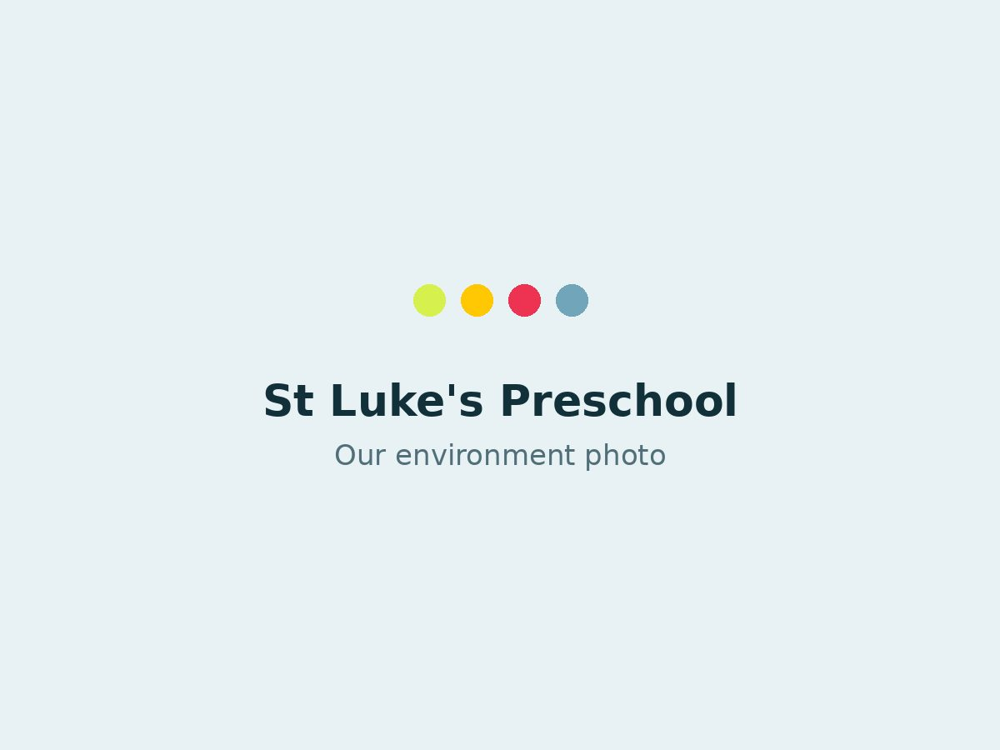

Vikki
A warm, steady leader who sets the tone for the whole centre and greets every child by name at the gate.
Bachelor of Early Childhood Education
For more than seventy years, Dapto families have trusted us with their children's first big steps. Unhurried days, real relationships, and learning that grows from play.

Not features or facilities, the quieter things that make St Luke's feel like the right place to leave your child.
Small by design. Every child here is known by name, by temperament, and by exactly what makes them light up.
Familiar, qualified faces who don't come and go, so trust has time to grow, for your child and for you.
Curiosity, kindness and confidence, built through real play and gentle guidance, never rushed, never pushed.
Warm Christian values and a genuine sense of belonging, where every family is met with grace and care.


Behind every puddle jumped in and every tower built is real learning: language, problem-solving, resilience, friendship. Our program follows each child's interests and gently stretches them, always within the Early Years Learning Framework.
Messy, tactile, sometimes a little bit brave, play is where confidence is built. We make room for it, then help children put words and ideas to what they've discovered.
How play-based learning works hereQualified early childhood educators who stay, so your child is cared for by familiar faces who truly know them.
A warm, steady leader who sets the tone for the whole centre and greets every child by name at the gate.
Bachelor of Early Childhood Education

Calm and creative, with a gift for helping shy children find their feet and their voice.

The one who notices the small things, a new word, a first friendship, and shares them with you at pick-up.
Natural, evolving spaces, gardens and a sensory bike track, cubbies, shade and open sky, where children explore at their own pace.



A gentle, predictable rhythm helps children feel secure, so they can relax, explore and learn.
Children are welcomed by name and settle in gently with a favourite activity and a familiar face.
We come together for story, song and prayer, building belonging and language for the day ahead.
Gardens, sandpit, bike track and big imaginative play, where bodies and friendships grow strong.
Painting, building, early literacy and numeracy, woven into the things each child already loves.
A calm, social meal together, practising independence, conversation and gratitude.
A gentle wind-down with stories and soft music, time to recharge little bodies and minds.
More exploration, then warm goodbyes and a story from the day to take home to you.
St Luke's is an amazing pre-school with staff that are very proactive in helping children reach their goals, they are absolutely brilliant! Would encourage any parent to send their child here. We can't say how impressed we are with the progress our son made.
St Luke's Preschool is outstanding! The staff are caring, knowledgeable, and dedicated to children's development. The facilities are safe, clean, and provide a stimulating environment for learning and play. I highly recommend it.
Great teachers, always smiling and happy. A positive environment for kids to thrive. I've had two kids develop themselves for school readiness at St Luke's and they have enjoyed every day spent learning.
We acknowledge the Dharawal people, the Traditional Custodians of the land on which we learn and play, and pay our respects to Elders past, present and emerging.
We invite every family to visit, meet our educators and experience St Luke's for themselves.